Building a Golgari Commander Deck
Hey there :) I have been eager to start posting about my process of building my commander decks for Magic The Gathering. I am a beginner, I have only started playing MTG a few months ago, and the Commander format specifically is still new to me, but I wanted to document my process and the changes I make to the decks because it’s fun.
Before I start, I would like to talk about the approach I take to Commander and my Commander decks. I am a casual player and my goal is to have fun. As long as I can get my engines going and do the thing I built my deck to do, I’m happy. Still, I am trying to make functional decks that can win. However, I still don’t have that many cards and have been mainly opening boosters, so please do not expect to see optimized decks (yet). My decks are still very much Bracket 2 and I plan for them to stay that way, at least for now, since everyone in my play group is in the same situation as I am when it comes to our card collection.
Now that you know how I play Commander, let’s get to the topic of today’s blog. The first Commander deck I am building from scratch. I have been working on a golgari (black green) Commander deck for a while now and I have used it already in games and enjoyed it quite a lot. Now, I have decided to try to build around an archetype that is highly discouraged for beginners: sacrifice. I know, I know. I listened to the advice by Rachel Weeks in the Command Zone podcast. I listened to the advice my boyfriend gave me. But I still decided to build a sacrifice deck, because I just love sacrifice! It’s fun! I thought that even if my deck wasn’t very good at first, I could just improve it with time. And that’s what I’ve been doing. In this post, I will be writing about the evolution of my deck until now and the changes I plan on making in the future.
The Commander
I didn’t have a plan, I just knew I wanted to build a golgari sacrifice deck, and luckily, I had a card that could serve that purpose (also it was the only one I had). The commander I picked was Long Feng, Grand Secretariat. I have heard that this card is commonly used for crazy combos, but that’s not my goal with it.
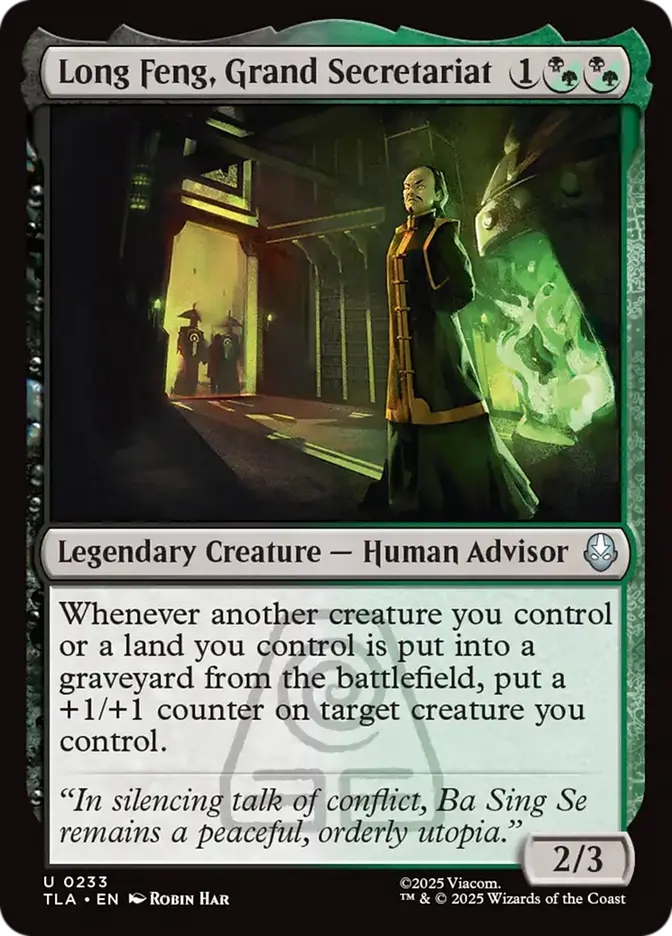
My game plan with this commander is:
- Get a sacrifice outlet on the field
- Get cards I can reanimate on the field (can be tokens, earthbent lands, creatures, anything)
- Pump up creatures
- Give them trample to finish
The main challenge of using this commander is that he is a sacrifice payoff, but he is simply an enabler. He doesn’t get my engine going by himself, so I need to make sure I get the cards I need. The problem is I don’t have a lot of black and green card draw in my card collection, but I plan to change that.
The First Version
In this section, I want to talk about some mistakes I made in my deckbuilding process when I first started. I don’t have the first version of this deck saved anywhere, but I know the main mistakes I made in my approach.
The main mistake I made at first was defining too many categories for my cards without actually understanding why each category was needed. I found a list I made of the categories when I was first planning out this deck and here it is:
- Sacrifice fodder
- Big creatures
- Sacrifice outlets
- Sacrifice payoff
- +1/+1 counters
- Card draw
- Ramp
- Interaction
- Trample (Finisher)
This list has 9 categories. That’s way too much. This is because I wasn’t thinking about why I needed these categories. I was just listing things I needed, but things I need doesn’t equal cards I need.
First of all, my commander is already a sacrifice payoff and puts +1/+1 counters on things. Obviously, redundancy is important in deckbuilding, but I don’t need as many cards for this purpose as I originally thought I did. I still have some, but less.
Additionally, some of these categories actually come together in a single card more often than not. Some of the sacrifice payoff I have is putting +1/+1 counters or card draw. Many ramp cards involve sacrificing, such as fetch lands. Keeping that in mind made things much easier.
Another mistake I made was thinking I needed big creatures altogether. I thought I would be sacrificing big creatures when playing with this deck. Cards like The Boulder, Ready to Rumble and Beifong’s Bounty Hunters got me stuck thinking I was going to sacrifice creatures with a lot of power to make my earthbent lands very big. So I put a bunch of simple big creatures like The Colossal Dreadmaw or Bogstomper. After trying out the deck while playing against my boyfriend, we realized this method was counterintuitive. Because if I’m pumping up my creatures, but then I’m sacrificing them, then there’s nothing left. So I realized I didn’t actually need big creatures in my deck. Making my creatures big is my commander’s job. Plus, if I’m going to sacrifice my lands anyway, I don’t need them to be big. This realization was extremely helpful, since it actually made my deckbuilding easier. It was one less piece I had to worry about.
My Current Deck
After adapting my approach, I now divide my deck in the following categories:
- Sacrifice fodder
- Sacrifice outlets
- Sacrifice payoff
- Trample (finisher)
- Card draw
- Interaction
Obviously, this deck is not perfect, so I don’t have a good number of cards for these exact categories right now, but these are the most important ones. You might have noticed that I removed the ramp category from this list. I haven’t bought any precon yet, so I don’t have cards such as Sol Ring and Arcane Signet, which I am aware will make a big difference in the way my deck is built, but I don’t want to worry about that right now. At the moment, my fetch lands, my Druid of the Cowl and my Simulacrum Shaper will have to do.
The goal is to evolve this deck so it focuses more and more in these specific categories.
I don’t plan on slapping my deck list in here, but I did want to include the cornerstones of the deck. Here’s a list of the most important cards of this deck:
The Boulder, Ready to Rumble: This card is the most consistent earthbending outlet of my deck, so I have a land to sacrifice every turn. Even if I don’t want to sacrifice the land, it will still be a big body on the battlefield, since I pump up my creatures with my commander.
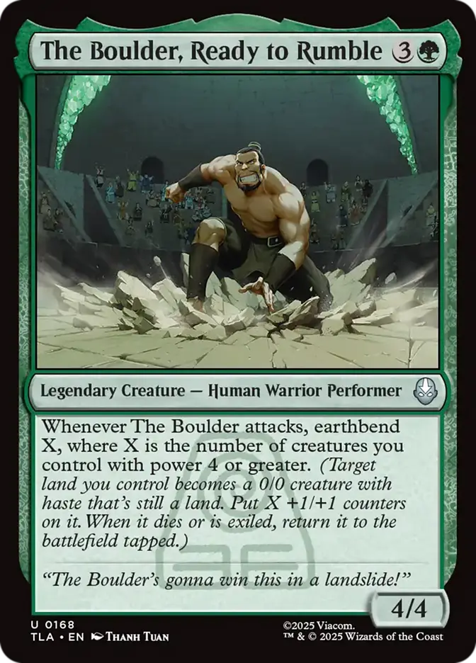
Teacher’s Pest: This is one of my favorite cards I own in general, but it’s so good on my deck. The moment this little guy is in, I don’t have to worry about having something to sacrifice anymore. I can sacrifice this every single turn and get it back easily. Not to mention it has menace and I gain life. It’s amazing.
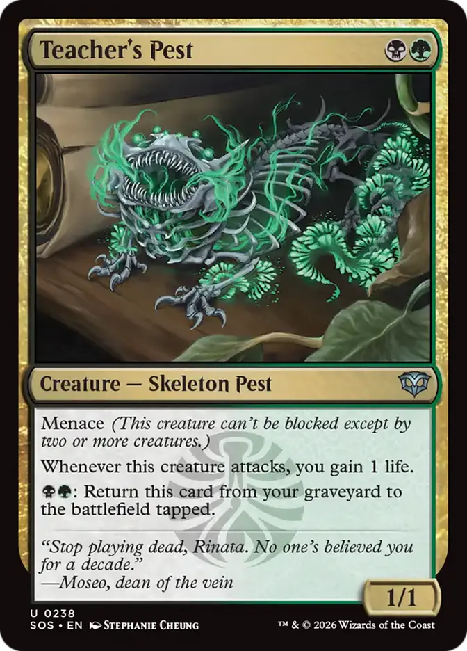
Fire Navy Trebuchet: Similarly to my Teacher’s Pest, this card also allows me to sacrifice the Ballistic Boulder token every single turn. I think these two cards are my current best sacrifice fodder.
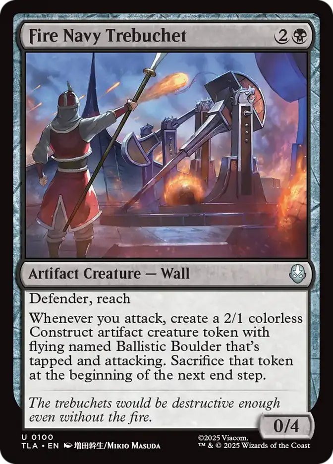
Beetle-Headed Merchants: This card is my best sacrifice outlet. It’s easy to attack with it since it becomes bigger and bigger, so I can use its ability every turn. And the value it gives me by itself? Obsessed with this card.
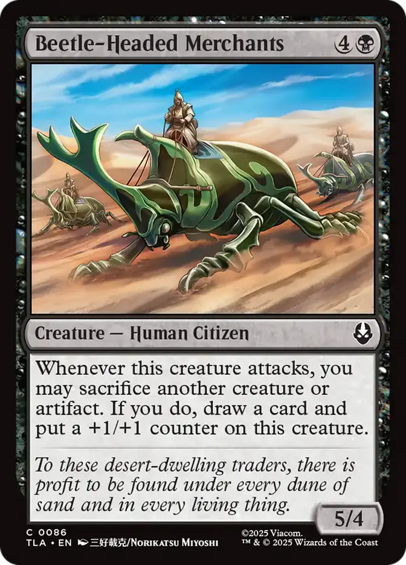
Beifong's Bounty Hunters: This card is great. It earthbends consistently, giving me a land to sacrifice every turn, and it is also a sacrifice payoff. Love it. Shoutout to my friend for trading it with me.
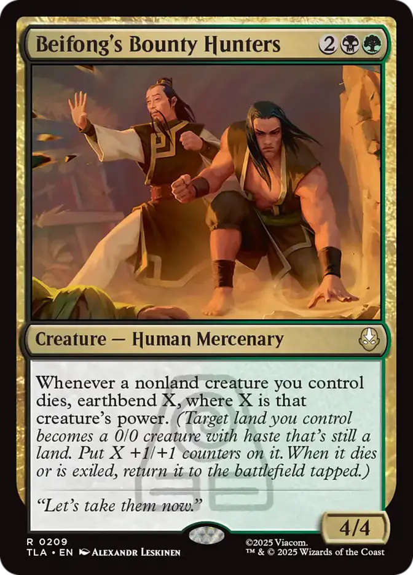
Ghalta the Unstoppable: My best finisher. This card gives everything trample and I can play it basically for free at the end of the game, since I probably already have really big creatures on the battlefield. I once played it for 1 green mana, it was so cool!
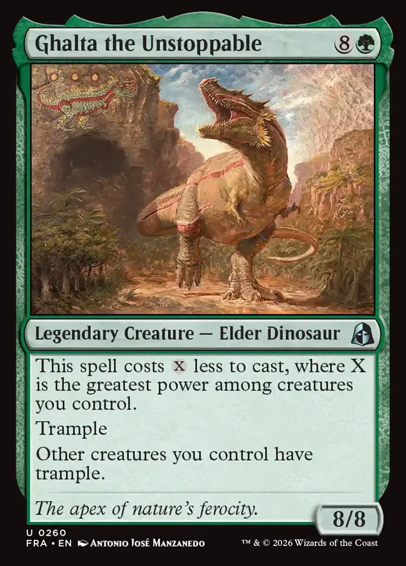
In terms of interaction, I have removal (such as Fell, Deadly Precision, and Silence the Echo), I have cards that bring creatures back the moment they die (such as Demonic Gifts and Ferocity of the Hunt). Can you tell that interaction is not the focus of this deck? I promise I actually care about it in other decks.
Deck Improvements
I think I have a pretty solid baseline for this deck already, but there are still definitely some cards that don’t need to be in it. The main thing that my deck lacks right now is a good amount of sacrifice fodder. I have so little cards for that. Unless I draw the specific cards that allow me to do that, which is hard, I have a lot of sacrifice outlets, a lot of payoff, but nothing to actually sacrifice. My plan is to buy some singles that do this, namely skeletons and token makers. Here are some of the cards that I plan to use as sacrifice fodder:
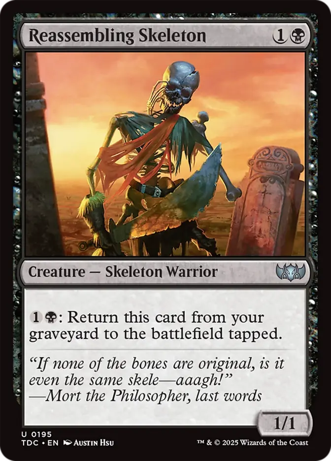
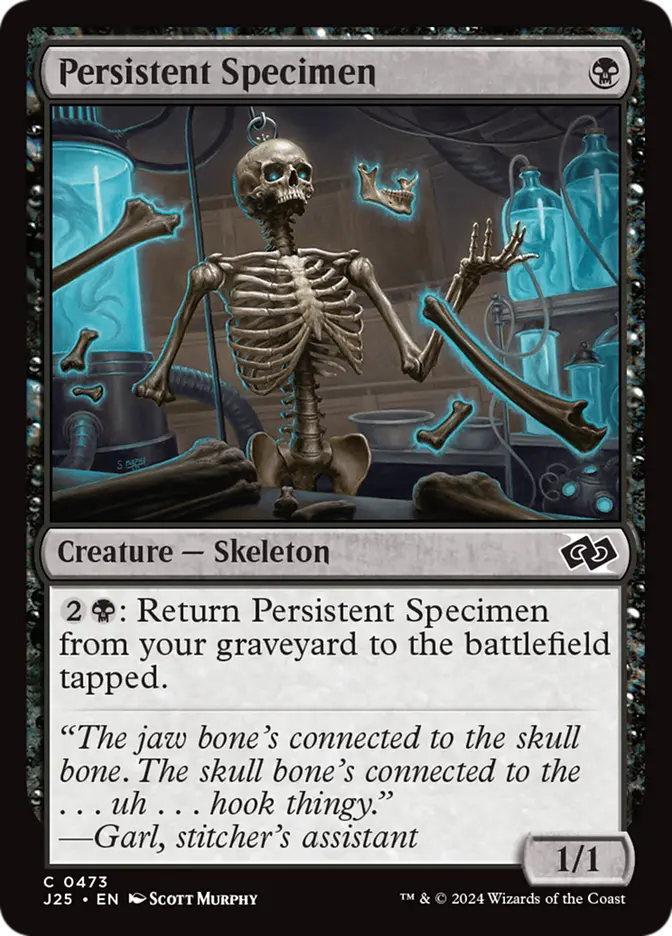
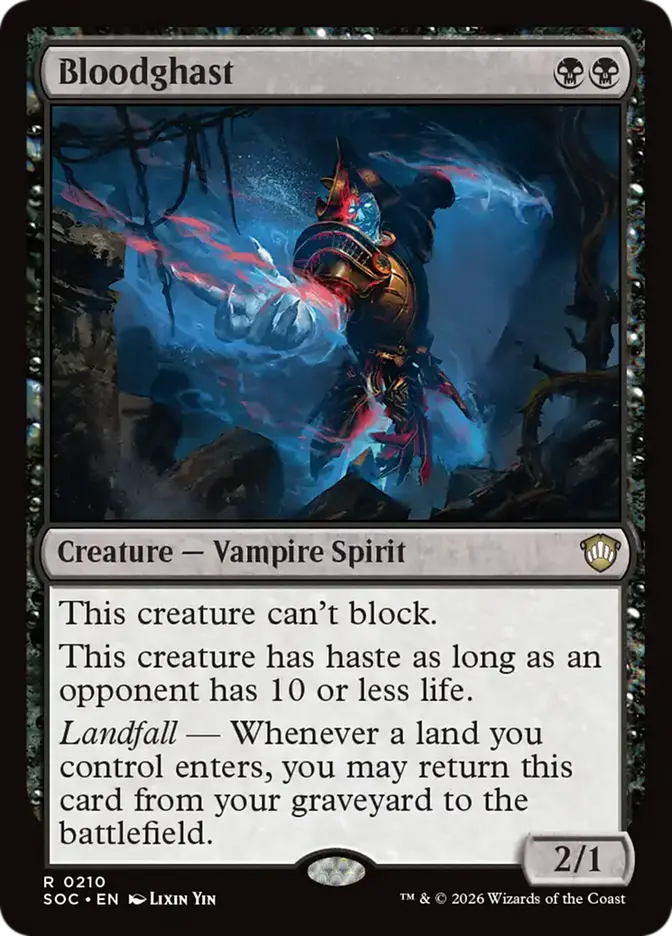
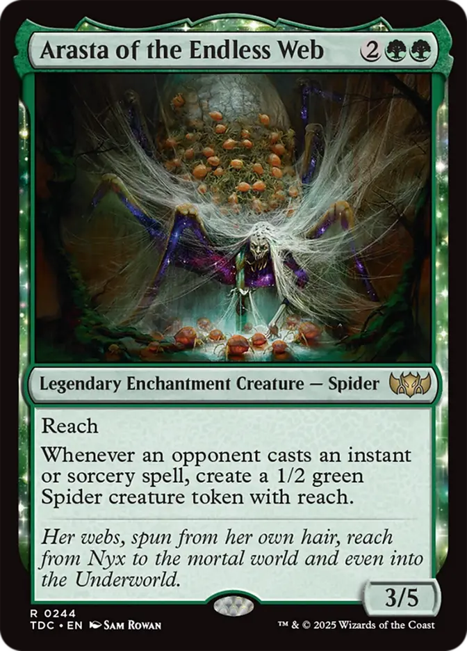
Another thing my deck lacks is card draw, as I mentioned previously. Here are some cards I plan on getting for this purpose:
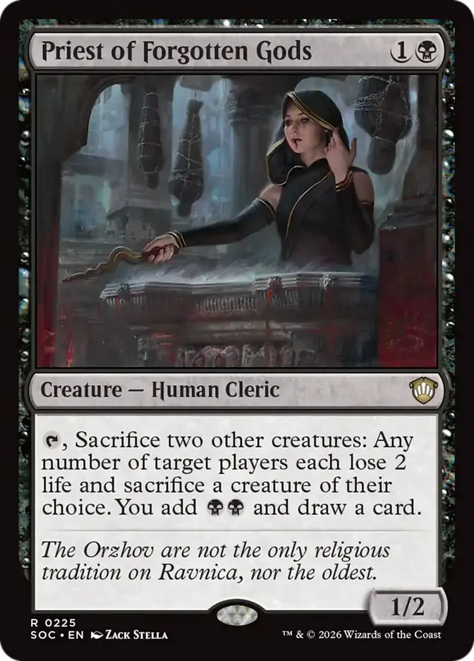
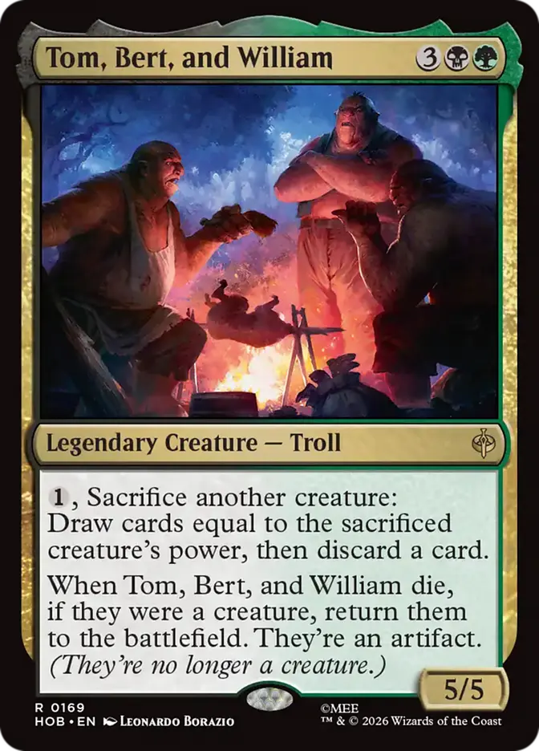
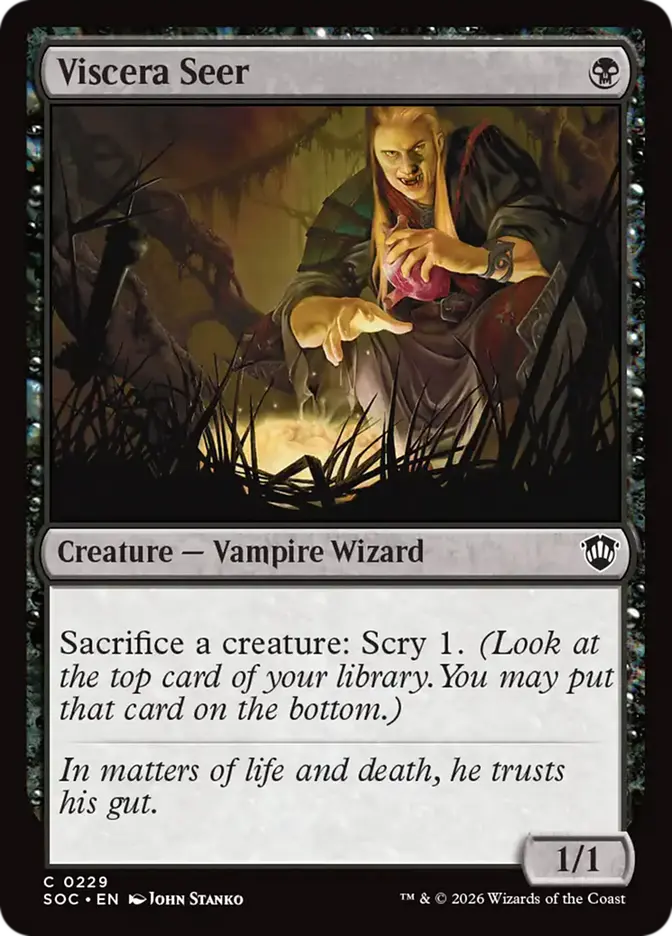
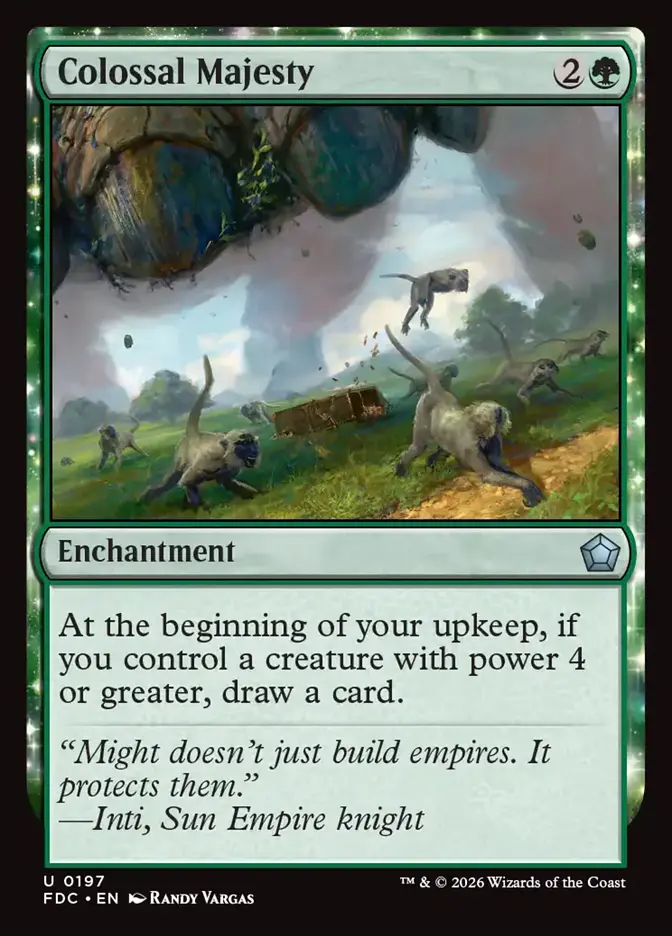
Of course some of these cards give me benefits other than card draw which makes them even better!
There are a few more cards I want to get, but these are the main ones. Not only are they great for this deck, but I also just think they’re cool.
I’m sure these changes will make my deck much more effective and consistent and I can’t wait to put them to the test!
Conclusion
Thank you for reading :) This is the first time I make a blog post about MTG and Commander and I’m excited to keep sharing my journey here. I am very interested in deckbuilding and I want to learn more about it. I plan on posting about my other decks here and decks I make in the future, as well as other things MTG related. See you next time!